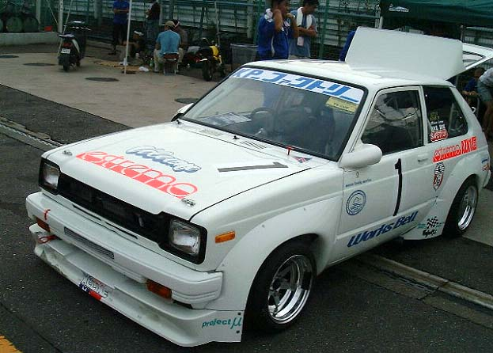

| TOP | ||
|
|
||
| TOP | ||
|
|
||
JCCA TSUKUBA ENDURANCE MEETING TSカップ最終戦 |
| 名称：JCCAクラシックカーフェスティバル
筑波エンデュランスミーティング 会場：筑波サーキット国内公認コース（全長2,045km） 茨城県結城郡千代川村大字村岡 主催，レース主管：日本クラシックカー協会（JCCA） レース公認：日本自動車連盟（JAF） |
|
|
|
| 開催日：2004年8月8日（日） 天候：晴れ 参加クラス：TSカップ TS-1クラス（1300ccを境にTS-1，TS-2に別けられレースは2クラス混走） 参加台数：TS-1クラス KP61 1台 TS-2クラス 310サニー4台 2クラス合計5台 車名：KP-ファクトリースターレット （車番１） ドライバー：吉水 滋浩 監督：二瓶 剛志 |
 |
|
|
|
|
| 予選 |
| 順位 | 車番 | クラス | 順 | ドライバー | 型式 | 車名 | ベストタイム | 周回 | （トップ差） | Km/h |
| 1 | 30 | 2 | 1 | 野部 賢一 | PB310 | チームポイズンプライベートサニー | 1'07.198 | 11/13 | 109.557 | |
| 2 | 23 | 2 | 2 | 千葉 和久 | B310 | 千葉モータースピットロードサニー | 1'07.370 | 15/16 | 0'00.172 | 109.277 |
| 3 | 16 | 2 | 3 | 佐野 孝一 | PB310 | OGURAデザイン工房ピットロードサニー | 1'07.639 | 9/9 | 0'00.441 | 108.843 |
| 4 | 1 | 1 | 1 | 吉水 滋浩 | KP61 | ＫＰファクトリースターレット | 1'07.988 | 10/12 | 0'00.790 | 108.284 |
| 5 | 44 | 2 | 4 | 神崎 猛 | HB310 | ＢＣＣ Ｆａｃｔｏｒｙサニー | 1'08.743 | 9/9 | 0'01.545 | 107.095 |
決勝 |
| 順位 | 車番 | クラス | 順 | ドライバー | 型式 | 車名 | 周回 | 所要時間 | （トップ差） | Km/h | ベストタイム | 周回 |
| 1 | 30 | 2 | 1 | 野部 賢一 | PB310 | チームポイズンプライベートサニー | 10 | 11'23.904 | 107.647 | 1'07.512 | 10/10 | |
| 2 | 16 | 2 | 2 | 佐野 孝一 | PB310 | OGURAデザイン工房ピットロードサニー | 10 | 11'24.706 | 0'00.802 | 107.521 | 1'06.504 | 9/10 |
| 3 | 1 | 1 | 1 | 吉水 滋浩 | KP61 | ＫＰファクトリースターレット | 10 | 11'36.315 | 0'12.411 | 105.728 | 1'07.941 | 8/10 |
| 4 | 44 | 2 | 3 | 神崎 猛 | HB310 | ＢＣＣ Ｆａｃｔｏｒｙサニー | 10 | 11'39.455 | 0'15.551 | 105.253 | 1'08.523 | 8/10 |
| 5 | 23 | 2 | 4 | 千葉 和久 | B310 | 千葉モータースピットロードサニー | 9 | 1Lap | 1'07.433 | 8/9 | ||
| スタート | 10:45'58.000 |
| フィニッシュ | 10:57'21.904 |
| 参加台数 | 5 |
| 出走台数 | 5 |
| 完走台数 | 5 |
| ベストタイム | No.1 （佐野 孝一） 1'06.504 9/10 111.700km/h |
| クラス | 1:TS-1 2:TS-2 |
|
|
| All Rights Reserved, Copyright(C) 2001-2004,KP-FACTORY |